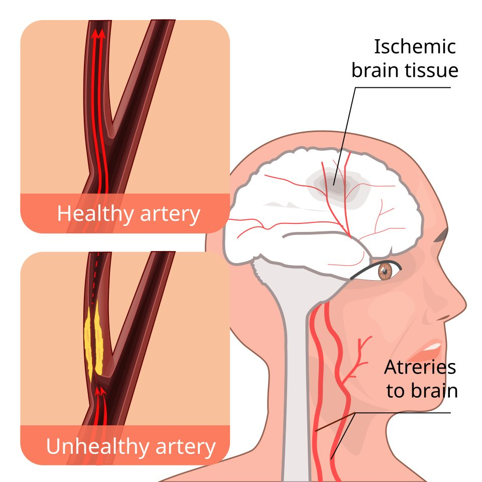
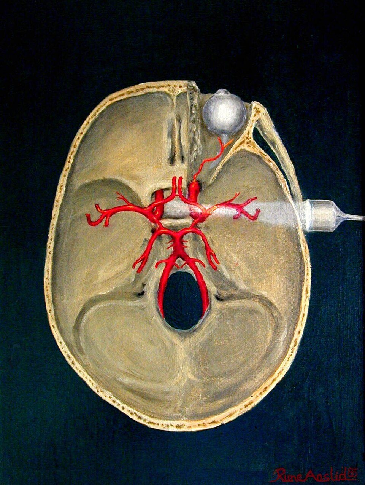
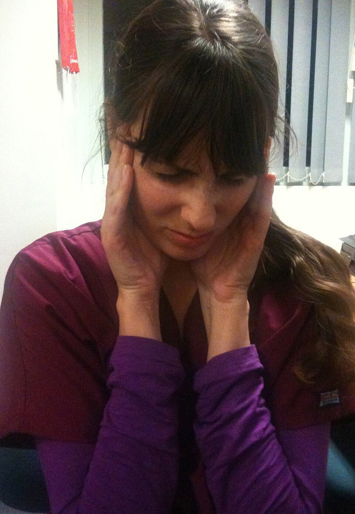
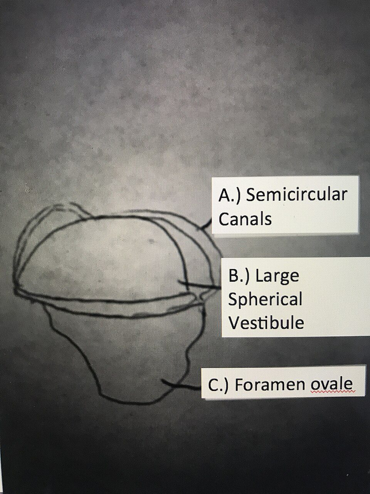
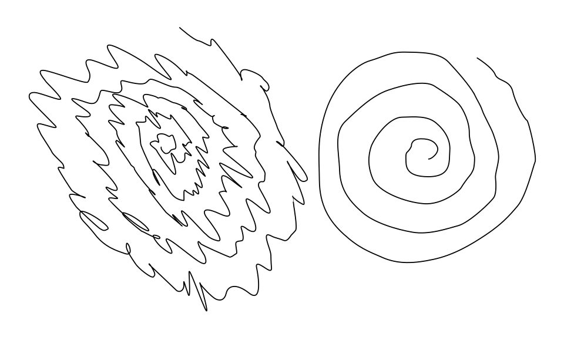
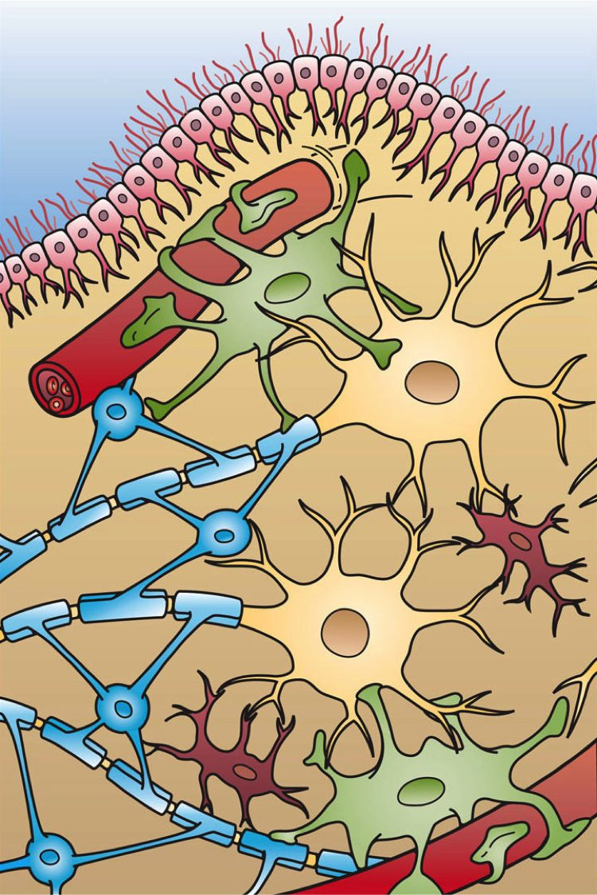
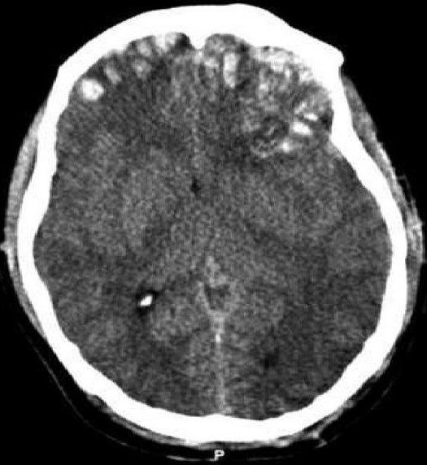
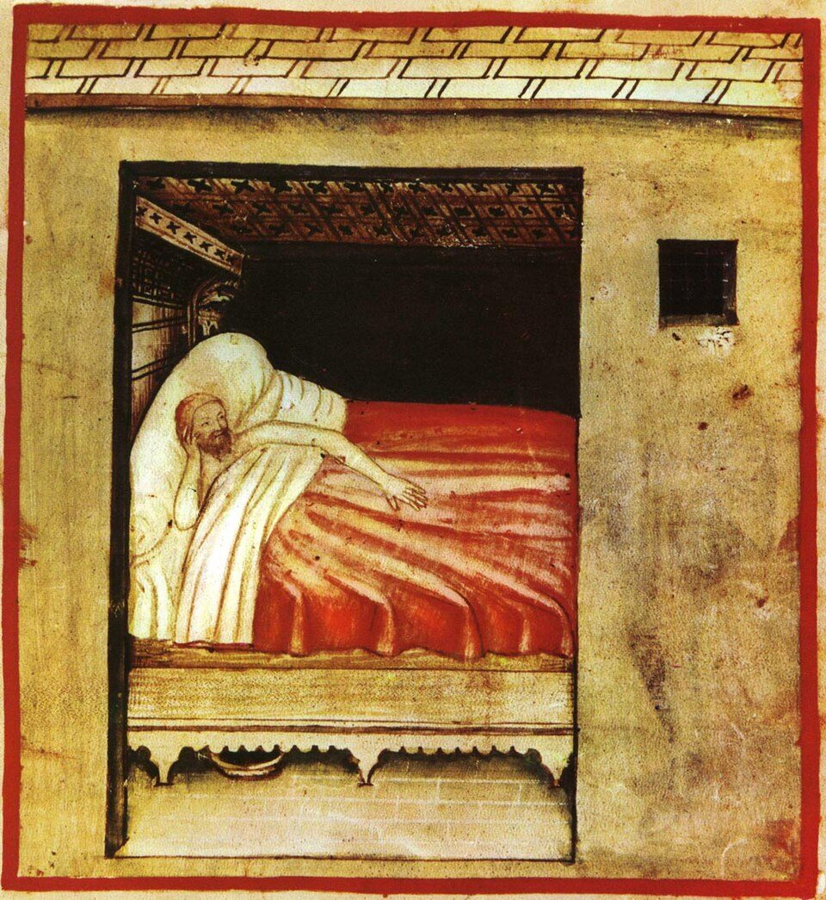

Enfermedades neurológicas
Ictus, migraña, epilepsia, alzhéimer, párkinson, esclerosis múltiple, ELA, neuropatías y muchas más: qué son, cómo se notan, cómo se diagnostican, cómo se tratan y cuándo consultar.
Ictus y circulación cerebral
 Ictus y circulación cerebral
Ictus y circulación cerebralIctus
Un vaso del cerebro se tapa o se rompe y una parte del cerebro se queda sin sangre. Es una urgencia: cada minuto cuenta. Tipos, síntomas, código ictus, tratamientos, rehabilitación, prevención y vida después del ictus.
Leer →
Ictus y circulación cerebralAtaque isquémico transitorio
Síntomas de ictus que desaparecen solos en minutos. No es un susto sin importancia, sino un aviso: el riesgo de un ictus en los días siguientes es alto.
Leer → Ictus y circulación cerebral
Ictus y circulación cerebralHemorragia cerebral
Una arteria se rompe y la sangre se acumula dentro del cerebro. La causa más frecuente es la tensión arterial alta. Síntomas, tratamiento y prevención.
Leer → Ictus y circulación cerebral
Ictus y circulación cerebralHemorragia subaracnoidea y aneurismas
El «peor dolor de cabeza de la vida», de inicio súbito, puede deberse a la rotura de un aneurisma cerebral. Qué es un aneurisma, cuándo se trata y qué hacer ante una cefalea en trueno.
Leer → Ictus y circulación cerebral
Ictus y circulación cerebralTrombosis venosa cerebral
Un coágulo tapa una de las venas que drenan el cerebro. Afecta sobre todo a mujeres jóvenes, empieza con dolor de cabeza y se trata con anticoagulantes.
Leer →
Ictus y circulación cerebralDisección arterial cervical
Un desgarro en la pared de la carótida o la arteria vertebral. Es una causa importante de ictus en jóvenes, a veces tras un movimiento brusco del cuello. Dolor de cuello y de cabeza como aviso.
Leer →Cefaleas y dolor facial
 Cefaleas y dolor facial
Cefaleas y dolor facialMigraña
Mucho más que un dolor de cabeza: crisis de dolor pulsátil con náuseas y molestia con la luz que pueden incapacitar durante horas o días. Desencadenantes, aura, tratamiento de las crisis y prevención.
Leer →
Cefaleas y dolor facialCefalea tensional
El dolor de cabeza más frecuente: una presión en banda, de intensidad leve o moderada, que no empeora al moverse. Por qué aparece y cómo aliviarlo sin abusar de los analgésicos.
Leer → Cefaleas y dolor facial
Cefaleas y dolor facialCefalea en racimos
Un dolor brutal alrededor de un ojo, con lagrimeo y congestión nasal, que llega en rachas de semanas. Es poco frecuente, pero tiene tratamientos eficaces, como el oxígeno.
Leer → Cefaleas y dolor facial
Cefaleas y dolor facialNeuralgia del trigémino
Descargas eléctricas de segundos en un lado de la cara al hablar, comer o lavarse los dientes. Por qué ocurre y cómo se trata, con fármacos o con cirugía.
Leer → Cefaleas y dolor facial
Cefaleas y dolor facialHipertensión intracraneal idiopática
Aumento de la presión dentro del cráneo sin tumor ni otra causa visible, sobre todo en mujeres jóvenes con sobrepeso. Dolor de cabeza y riesgo para la vista.
Leer →Cefaleas y dolor facialCefalea por abuso de medicación
Tomar analgésicos para el dolor de cabeza demasiados días al mes puede convertirlo en diario. Cómo se reconoce, cómo se retiran los fármacos y cómo evitarlo.
Leer →Epilepsia, mareo y pérdida de conocimiento
 Epilepsia, mareo y pérdida de conocimiento
Epilepsia, mareo y pérdida de conocimientoEpilepsia
Tendencia del cerebro a producir crisis por descargas eléctricas anormales de las neuronas. Tipos de crisis, causas, pruebas y tratamiento. Siete de cada diez personas quedan libres de crisis con medicación.
Leer → Epilepsia, mareo y pérdida de conocimiento
Epilepsia, mareo y pérdida de conocimientoSíncope
Un desmayo es una pérdida breve de conocimiento porque llega poca sangre al cerebro. Casi siempre es benigno, pero hay que saber distinguirlo de una crisis epiléptica y de un problema del corazón.
Leer →
Epilepsia, mareo y pérdida de conocimientoVértigo posicional paroxístico benigno
La causa más frecuente de vértigo: segundos de sensación de giro al tumbarse, girarse en la cama o mirar hacia arriba. Se cura en la consulta con una maniobra.
Leer → Epilepsia, mareo y pérdida de conocimiento
Epilepsia, mareo y pérdida de conocimientoEnfermedad de Ménière
Crisis de vértigo de horas con pérdida de audición, acúfenos y sensación de oído taponado. Por qué ocurre, cómo se diagnostica y qué tratamientos reducen las crisis.
Leer →Memoria y demencias
 Memoria y demencias
Memoria y demenciasDeterioro cognitivo leve
Fallos de memoria u otras capacidades mayores de lo esperable por la edad, pero que no impiden hacer vida independiente. Qué significa, qué causas tiene y por qué no siempre evoluciona a demencia.
Leer → Memoria y demencias
Memoria y demenciasEnfermedad de Alzheimer
La causa más frecuente de demencia. Cómo empieza, cómo avanza, cómo se diagnostica hoy con biomarcadores, qué tratamientos hay y cómo cuidar a quien la padece.
Leer → Memoria y demencias
Memoria y demenciasDemencia vascular
Deterioro cognitivo causado por ictus o por el daño acumulado de las pequeñas arterias del cerebro. Es la segunda causa de demencia y la más prevenible.
Leer → Memoria y demencias
Memoria y demenciasDemencia con cuerpos de Lewy
Demencia con fluctuaciones de la atención, alucinaciones visuales, rigidez parecida al párkinson y sueño agitado. Muy sensible a los antipsicóticos.
Leer → Memoria y demencias
Memoria y demenciasDemencia frontotemporal
Una demencia que suele empezar antes de los 65 años con cambios de personalidad y conducta o con problemas del lenguaje, más que con olvidos.
Leer → Memoria y demencias
Memoria y demenciasEnfermedad de Creutzfeldt-Jakob
Una demencia muy rápida causada por priones, proteínas mal plegadas que contagian su forma anómala. Tipos, síntomas, diagnóstico y vigilancia.
Leer → Memoria y demencias
Memoria y demenciasAmnesia global transitoria
Un episodio brusco de pérdida de memoria de horas en el que la persona repite las mismas preguntas. Asusta mucho, pero es benigno y casi nunca se repite.
Leer →Trastornos del movimiento
 Trastornos del movimiento
Trastornos del movimientoEnfermedad de Parkinson
La enfermedad neurodegenerativa que más crece en el mundo. Temblor, lentitud y rigidez, pero también síntomas no motores. Diagnóstico, tratamiento con levodopa y otras opciones, y vida diaria.
Leer →
Trastornos del movimientoTemblor esencial
El trastorno del movimiento más frecuente: temblor de las manos al usarlas, que a menudo viene de familia y mejora con un poco de alcohol. No es párkinson.
Leer → Trastornos del movimiento
Trastornos del movimientoDistonía
Contracciones musculares involuntarias que producen posturas anormales o movimientos de torsión, como la tortícolis espasmódica o el calambre del escribiente. La toxina botulínica es el tratamiento de referencia.
Leer → Trastornos del movimiento
Trastornos del movimientoEnfermedad de Huntington
Enfermedad hereditaria que combina movimientos involuntarios, cambios psiquiátricos y deterioro cognitivo. Cada hijo de una persona afectada tiene un 50 % de probabilidad de heredarla.
Leer → Trastornos del movimiento
Trastornos del movimientoAtaxias
Falta de coordinación de los movimientos por un problema del cerebelo o de sus conexiones. Puede deberse al alcohol, a un ictus, a fármacos o a enfermedades hereditarias como la ataxia de Friedreich.
Leer → Trastornos del movimiento
Trastornos del movimientoSíndrome de piernas inquietas
Necesidad imperiosa de mover las piernas al estar en reposo, sobre todo por la noche, que impide dormir. Relación con el hierro y tratamiento.
Leer → Trastornos del movimiento
Trastornos del movimientoSíndrome de Tourette
Tics motores y vocales que empiezan en la infancia y suelen mejorar en la adolescencia. Qué son los tics, con qué se asocian, cuándo tratarlos y cómo ayuda la terapia conductual.
Leer → Trastornos del movimiento
Trastornos del movimientoParkinsonismos atípicos
Atrofia multisistémica, parálisis supranuclear progresiva y degeneración corticobasal. Se parecen al párkinson, pero avanzan más deprisa y responden poco a la levodopa.
Leer → Trastornos del movimiento
Trastornos del movimientoEnfermedad de Wilson
Una enfermedad hereditaria en la que el cobre se acumula en el hígado y el cerebro. Produce temblor, distonía o síntomas psiquiátricos en jóvenes y tiene un tratamiento eficaz.
Leer →Enfermedades desmielinizantes
 Enfermedades desmielinizantes
Enfermedades desmielinizantesEsclerosis múltiple
Enfermedad inflamatoria en la que el sistema inmunitario daña la mielina del cerebro y la médula. Es la causa más frecuente de discapacidad neurológica no traumática en adultos jóvenes. Síntomas, diagnóstico y tratamientos que han cambiado su pronóstico.
Leer →
Enfermedades desmielinizantesNeuromielitis óptica
Enfermedad autoinmune que ataca sobre todo los nervios ópticos y la médula espinal, con brotes graves. Se diferencia de la esclerosis múltiple por un anticuerpo, el anti-acuaporina-4.
Leer → Enfermedades desmielinizantes
Enfermedades desmielinizantesNeuritis óptica
Inflamación del nervio óptico que produce pérdida de visión de un ojo con dolor al moverlo. A menudo es el primer síntoma de una esclerosis múltiple.
Leer → Enfermedades desmielinizantes
Enfermedades desmielinizantesMielitis transversa
Inflamación de un segmento de la médula espinal que produce en horas o días debilidad, pérdida de sensibilidad y problemas de esfínteres. Causas, diagnóstico y tratamiento urgente.
Leer →Neuromusculares y nervios periféricos
 Neuromusculares y nervios periféricos
Neuromusculares y nervios periféricosEsclerosis lateral amiotrófica (ELA)
Enfermedad neurodegenerativa en la que mueren las neuronas que controlan los músculos. Produce debilidad progresiva que afecta a brazos, piernas, habla, deglución y respiración. Atención multidisciplinar y tratamientos.
Leer → Neuromusculares y nervios periféricos
Neuromusculares y nervios periféricosMiastenia gravis
Enfermedad autoinmune en la que falla la comunicación entre nervio y músculo. Produce debilidad que empeora con el esfuerzo: párpado caído, visión doble, dificultad para tragar.
Leer → Neuromusculares y nervios periféricos
Neuromusculares y nervios periféricosSíndrome de Guillain-Barré
Parálisis que sube desde las piernas en días, a menudo tras una infección. El sistema inmunitario ataca los nervios periféricos. Requiere ingreso, pero la mayoría se recupera.
Leer → Neuromusculares y nervios periféricos
Neuromusculares y nervios periféricosNeuropatía periférica
Daño de los nervios que salen de la médula hacia el cuerpo. Produce hormigueo, acorchamiento, dolor quemante o debilidad, a menudo en los pies. La diabetes es la causa más frecuente.
Leer → Neuromusculares y nervios periféricos
Neuromusculares y nervios periféricosSíndrome del túnel carpiano
Hormigueo y adormecimiento de los primeros dedos de la mano, sobre todo por la noche, por compresión del nervio mediano en la muñeca. La neuropatía por atrapamiento más frecuente.
Leer → Neuromusculares y nervios periféricos
Neuromusculares y nervios periféricosParálisis facial periférica
La mitad de la cara deja de moverse de un día para otro. La forma más común, la parálisis de Bell, suele recuperarse. Cómo distinguirla de un ictus y cómo proteger el ojo.
Leer → Neuromusculares y nervios periféricos
Neuromusculares y nervios periféricosCiática y radiculopatías
Dolor que baja por la pierna o el brazo siguiendo el trayecto de una raíz nerviosa comprimida, casi siempre por una hernia discal. La mayoría mejora sin cirugía en semanas.
Leer → Neuromusculares y nervios periféricos
Neuromusculares y nervios periféricosDistrofias musculares
Enfermedades genéticas en las que los músculos se debilitan y degeneran poco a poco. La más conocida es la distrofia de Duchenne, que afecta a niños. Nuevas terapias y atención multidisciplinar.
Leer → Neuromusculares y nervios periféricos
Neuromusculares y nervios periféricosAtrofia muscular espinal
Enfermedad genética de las motoneuronas de la médula que causa debilidad desde la infancia. Ha pasado de ser la primera causa genética de muerte infantil a tener tres tratamientos eficaces, más aún si se dan antes de los síntomas.
Leer → Neuromusculares y nervios periféricos
Neuromusculares y nervios periféricosHerpes zóster y neuralgia postherpética
El virus de la varicela se reactiva en un nervio y produce una erupción dolorosa en franja. En algunas personas el dolor persiste meses. La vacuna lo previene.
Leer →Infecciones del sistema nervioso
 Infecciones del sistema nervioso
Infecciones del sistema nerviosoMeningitis
Inflamación de las meninges, casi siempre por una infección. La meningitis bacteriana es una urgencia que puede matar en horas. Síntomas, vacunas y tratamiento.
Leer → Infecciones del sistema nervioso
Infecciones del sistema nerviosoEncefalitis
Inflamación del propio cerebro, por virus o por el sistema inmunitario. Fiebre con confusión, conducta extraña o convulsiones obliga a acudir a urgencias. Las encefalitis autoinmunes se descubrieron hace menos de veinte años.
Leer →Traumatismos, tumores y otros

Traumatismos, tumores y otrosTraumatismo craneoencefálico y conmoción cerebral
Desde el golpe leve hasta la lesión grave. Qué vigilar tras un golpe en la cabeza, cuándo ir a urgencias, cómo recuperarse de una conmoción y cuándo volver al deporte.
Leer → Traumatismos, tumores y otros
Traumatismos, tumores y otrosLesión medular
Daño de la médula espinal que interrumpe la comunicación entre el cerebro y el cuerpo por debajo de la lesión. Causas, niveles, rehabilitación y avances en investigación.
Leer → Traumatismos, tumores y otros
Traumatismos, tumores y otrosTumores cerebrales
Crecimientos anormales dentro del cráneo: unos son benignos, como los meningiomas, y otros malignos, como los gliomas. Síntomas, diagnóstico y tratamiento.
Leer → Traumatismos, tumores y otros
Traumatismos, tumores y otrosHidrocefalia
Acumulación excesiva de líquido cefalorraquídeo en los ventrículos del cerebro. En niños hace crecer la cabeza; en mayores, la hidrocefalia normotensiva causa una tríada tratable de marcha, memoria y orina.
Leer → Traumatismos, tumores y otros
Traumatismos, tumores y otrosMalformación de Chiari
La parte baja del cerebelo desciende por el agujero de la base del cráneo. A menudo se descubre por casualidad y no necesita tratamiento; a veces produce dolor de cabeza al toser o siringomielia.
Leer → Traumatismos, tumores y otros
Traumatismos, tumores y otrosNeurofibromatosis y esclerosis tuberosa
Dos enfermedades genéticas que producen tumores benignos en la piel, los nervios y el cerebro. Manchas café con leche, neurofibromas, epilepsia y nuevos tratamientos dirigidos.
Leer →Infancia y sueño
 Infancia y sueño
Infancia y sueñoParálisis cerebral infantil
Grupo de trastornos permanentes del movimiento y la postura por una lesión del cerebro en desarrollo, antes, durante o poco después del parto. No empeora con el tiempo y la atención temprana marca la diferencia.
Leer → Infancia y sueño
Infancia y sueñoNarcolepsia
Enfermedad del sueño con somnolencia diurna irresistible y, en muchos casos, cataplejía: pérdida brusca del tono muscular con las emociones. Se debe a la pérdida de neuronas de hipocretina.
Leer →
Infancia y sueñoInsomnio crónico
Dificultad para dormir al menos tres noches por semana durante tres meses, con cansancio de día. El tratamiento más eficaz no es una pastilla, sino la terapia cognitivo-conductual.
Leer → Infancia y sueño
Infancia y sueñoApnea del sueño
Pausas en la respiración mientras se duerme que fragmentan el sueño, causan somnolencia y aumentan el riesgo de ictus, hipertensión y deterioro cognitivo. Se trata con CPAP.
Leer → Infancia y sueño
Infancia y sueñoEpilepsias de la infancia
Convulsiones febriles, epilepsia de ausencias, epilepsia rolándica, síndrome de West y síndrome de Dravet. Cómo son, cómo se tratan y qué pronóstico tienen.
Leer →